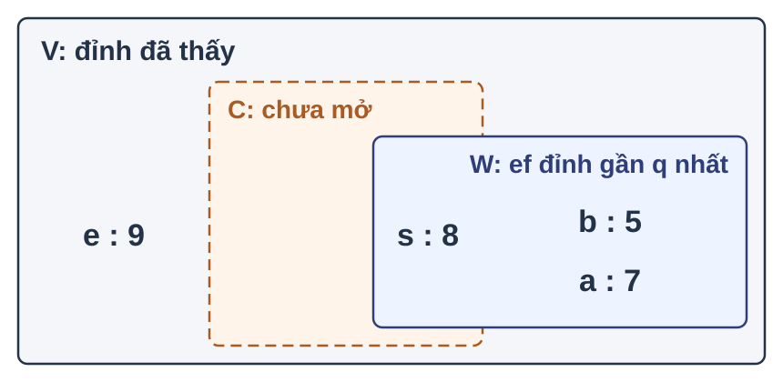
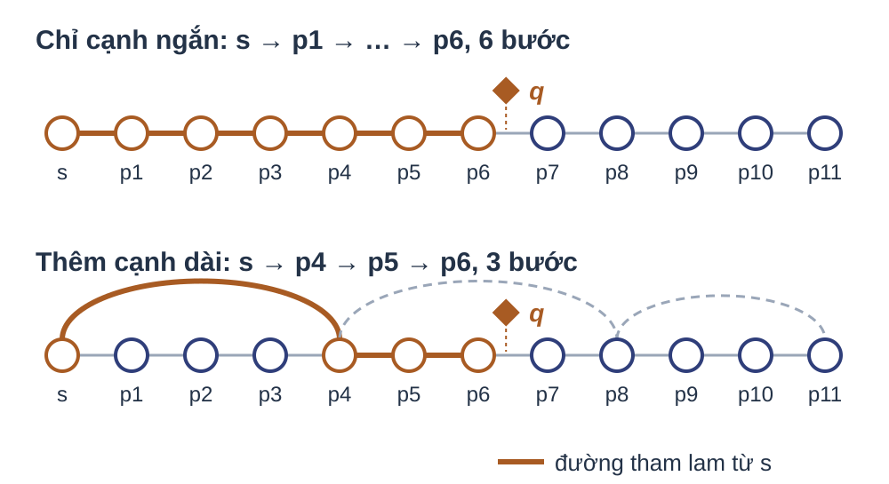
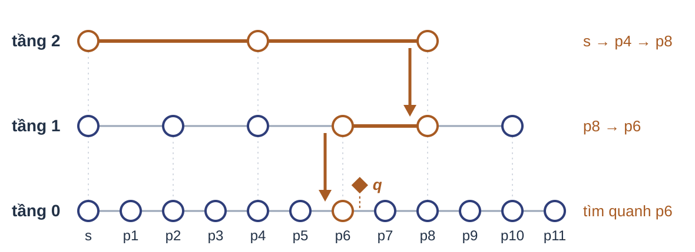
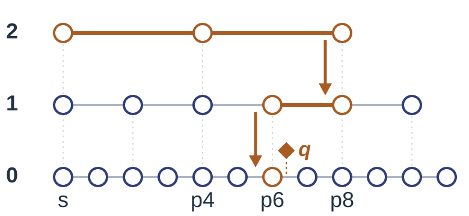
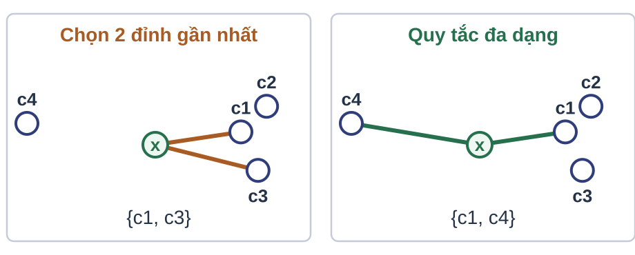
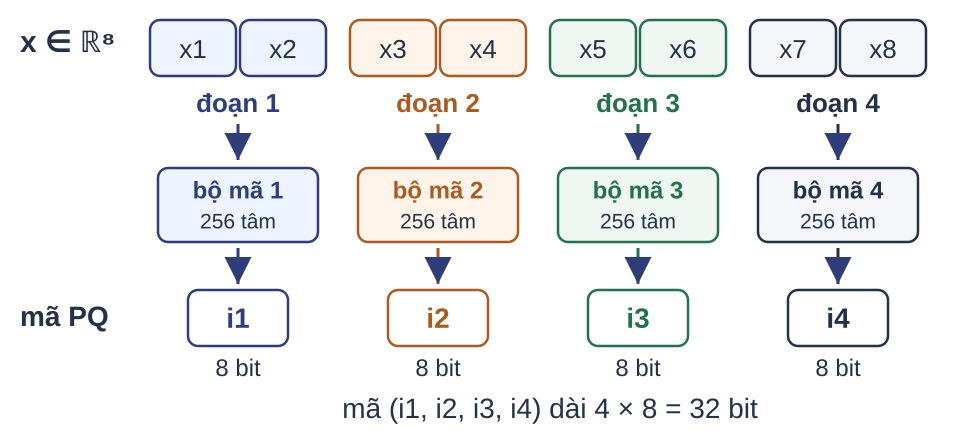

Đồ thị lân cận Mỗi véc-tơ là một đỉnh; cạnh nối tới một số đỉnh gần nó. Chỉ mục lưu véc-tơ, danh sách lân cận của mỗi đỉnh và một điểm vào. Tìm: từ điểm vào, đo $d(q,\cdot)$ tại các lân cận, đi tới đỉnh gần $q$ hơn. Chỉ các đỉnh trên đường đi được đo, nên số véc-tơ được đo giảm.
Trong hình, mỗi đoạn thẳng là hai cạnh có hướng ngược nhau; vị trí các đỉnh giữ đúng tỷ lệ khoảng cách tới $q$. Đồ thị không thay đổi hàm khoảng cách; nó chỉ quyết định véc-tơ nào được đo. Bộ nhớ của chỉ mục gồm $N$ véc-tơ cộng với danh sách lân cận, khoảng $N\cdot(\text{kích thước véc-tơ}+4\ \text{byte}\times\text{bậc})$ khi mỗi mã định danh chiếm 4 byte.
Đồ thị bảy đỉnh do học phần dựng để chạy tay; cùng đồ thị được dùng đến hết phần tìm kiếm trên một tầng.
Nguồn: Princeton COS 597A, lớp 9, tr.7 (cấu trúc dữ liệu), tr.8 (tìm kiếm tham lam); Malkov và Yashunin, tr.2.
Tìm kiếm tham lam Mỗi bước: đo các lân cận của đỉnh hiện tại; sang lân cận gần $q$ nhất nếu nó gần hơn đỉnh hiện tại, ngược lại dừng.
Đỉnh Lân cận Quyết định $e:9$ $a:7,\ s:8$ sang $a$ $a:7$ $e:9,\ b:5$ sang $b$ $b:5$ $a:7$ dừng
$b$ là cực tiểu cục bộ: không lân cận nào gần $q$ hơn, nhưng $d(z,q)=1<5$.
Cực tiểu cục bộ là đỉnh không có lân cận nào gần $q$ hơn chính nó. Điều kiện dừng của tham lam chỉ kiểm các lân cận trực tiếp, nên nó bảo đảm kết quả là cực tiểu cục bộ, không bảo đảm là đỉnh gần $q$ nhất. Ở đây nhánh $e\to s$ bị bỏ ngay ở bước đầu vì $s:8$ xa hơn $a:7$, trong khi chính nhánh này dẫn tới $t:4$, $u:2$, $z:1$.
Thuật toán dừng vì khoảng cách giảm nghiêm ngặt sau mỗi bước và đồ thị hữu hạn. Nếu khoảng cách đã đo được ghi nhớ, ví dụ cần 4 phép đo: $e$, rồi $a$ và $s$, rồi $b$; ba đỉnh $t,u,z$ không được đo.
Đồ thị và khoảng cách do học phần dựng từ cơ chế của nguồn, không phải dữ liệu thực nghiệm. Nguồn: Princeton COS 597A, lớp 9, tr.8 (tham lam, cực tiểu cục bộ, không quay lui), tr.11–13 (ví dụ một chiều).
Tìm kiếm chùm $C$: đỉnh đã thấy, chưa mở; $W$: tối đa $ef$ đỉnh gần $q$ nhất đã thấy. Mỗi bước mở đỉnh gần $q$ nhất trong $C$.
Mở $C$ sau bước $W$ sau bước, $ef=3$ $e$ $a{:}7,\ s{:}8$ $a{:}7,\ s{:}8,\ e{:}9$ $a$ $b{:}5,\ s{:}8$ $b{:}5,\ a{:}7,\ s{:}8$ $b$ $s{:}8$ $b{:}5,\ a{:}7,\ s{:}8$ $s$ $t{:}4$ $t{:}4,\ b{:}5,\ a{:}7$ $t$ $u{:}2$ $u{:}2,\ t{:}4,\ b{:}5$ $u$ $z{:}1$ $z{:}1,\ u{:}2,\ t{:}4$ $z$ rỗng $z{:}1,\ u{:}2,\ t{:}4$
Câu hỏi: Chạy lại với $ef=2$. Thuật toán dừng ở bước nào và trả $W$ nào?
Một lân cận mới được thêm vào $C$ và $W$ khi $W$ chưa đủ $ef$ phần tử hoặc lân cận đó gần $q$ hơn phần tử xa nhất của $W$; nếu $W$ vượt $ef$ thì bỏ phần tử xa nhất. Thuật toán dừng khi $C$ rỗng hoặc đỉnh sắp mở xa $q$ hơn phần tử xa nhất của $W$. Khi mở $b$, lân cận duy nhất $a$ đã thấy, nhưng $s{:}8$ vẫn nằm trong $C$; đó là nhánh dự phòng mà tham lam đã bỏ. Với $ef=1$, quy tắc này trùng tham lam và dừng ở $b$.
Đáp án $ef=2$: sau khi mở $e$, $W=\{a{:}7,s{:}8\}$; mở $a$ thêm $b{:}5$ và bỏ $s$, $W=\{b{:}5,a{:}7\}$; mở $b$ không thêm gì; đỉnh kế tiếp trong $C$ là $s{:}8$, xa hơn phần tử xa nhất $a{:}7$ của $W$, nên dừng và trả $\{b,a\}$. Chùm phải đủ rộng để giữ $s$ trong $W$ thì mới đi tiếp qua nhánh $s$.
Vết chạy tính theo Thuật toán 2 của bài báo HNSW trên đồ thị ví dụ do học phần dựng. Nguồn: Princeton COS 597A, lớp 9, tr.9 (tìm kiếm chùm với hàng đợi ưu tiên); Malkov và Yashunin, Thuật toán 2, tr.4.
Đặc tả SEARCH-LAYER 
Trạng thái của ví dụ sau khi mở $b$, $ef=3$.
Đầu vào: truy vấn $q$; bề rộng $ef\ge1$; tập điểm vào $ep$ với $1\le|ep|\le ef$; tầng $\ell_c$ (một đồ thị: $\ell_c=0$).
Đầu ra: $W$, tối đa $ef$ đỉnh gần $q$ nhất trong các đỉnh đã thấy.
Trạng thái: ba tập $V$, $C$, $W$; $C,W\subseteq V$.
Tìm kiếm chùm trên đồ thị ví dụ chính là SEARCH-LAYER với $ep=\{e\}$, $ef=3$. Tham số $\ell_c$ chỉ tầng của đồ thị nhiều tầng; khi chỉ có một đồ thị, $\ell_c=0$. Mọi đỉnh trong $ep$ phải thuộc tầng $\ell_c$. Điều kiện $1\le|ep|\le ef$ làm $W\leftarrow ep$ là khởi tạo hợp lệ: $W$ không rỗng nên luôn có phần tử xa nhất, và không vượt $ef$.
Đầu ra chỉ nói về các đỉnh đã thấy, không nói về toàn tầng: vùng chưa được phát hiện có thể chứa đỉnh gần $q$ hơn. Trong hình, $e$ đã thấy nhưng bị đẩy khỏi $W$; $s$ vừa chưa mở vừa thuộc $W$.
Nguồn: Malkov và Yashunin, Thuật toán 2, tr.4.
Giả mã SEARCH-LAYER
V ← ep; C ← ep; W ← ep
while C khác rỗng:
c ← lấy ra đỉnh gần q nhất trong C
f ← đỉnh xa q nhất trong W
if d(c,q) > d(f,q): break
for y in lân cận của c ở tầng ℓc:
if y ∉ V:
thêm y vào V
f ← đỉnh xa q nhất trong W
if |W| < ef or d(y,q) < d(f,q):
thêm y vào C và W
if |W| > ef: bỏ đỉnh xa q nhất khỏi W
return W
Ví dụ $ef=3$, mở $s$ khi $W=\{b,a,s\}$: $f=s{:}8$; thêm $t{:}4$, bỏ $s$; ngưỡng mới $f=a{:}7$.
Phần tử xa nhất $f$ của $W$ là ngưỡng chấp nhận. Ngưỡng phải tính lại trong vòng lặp lân cận vì $W$ có thể đổi sau mỗi lần thêm và bỏ; dùng ngưỡng cũ sẽ nhận những đỉnh không còn đủ tốt. Lệnh break chạy khi đỉnh gần nhất còn trong $C$ đã xa $q$ hơn $f$. Khi đó mọi đỉnh của $W$ đều đã được mở: một đỉnh của $W$ còn trong $C$ sẽ gần $q$ hơn $c$, trái với cách chọn $c$. Mở tiếp các ứng viên xa hơn vẫn có thể gặp đỉnh tốt hơn; dừng ở đây là đánh đổi để giới hạn số phép đo, nên kết quả là gần đúng.
Thuật toán kết thúc vì mỗi đỉnh vào $V$ nhiều nhất một lần, mỗi đỉnh vào $C$ nhiều nhất một lần và tầng hữu hạn. Điều kiện dừng của nguồn chỉ so $d(c,q)$ với $d(f,q)$, không đòi $|W|=ef$.
Nguồn: Malkov và Yashunin, Thuật toán 2, tr.4.
Bất biến của SEARCH-LAYER $W$ là một tập gồm $\min(ef,|V|)$ đỉnh của $V$ gần $q$ nhất.
Khởi tạo $V=W=ep$, $|ep|\le ef$. Duy trì Đỉnh mới $y$ vào $V$; vào $W$ nếu $|W|<ef$, hoặc thay đỉnh xa nhất nếu gần $q$ hơn. Khi dừng $W$ đúng trên $V$; đỉnh ngoài $V$ không được xét.
Ví dụ $ef=2$: $W=\{b{:}5,a{:}7\}$ đúng trên $V=\{e,a,s,b\}$, nhưng $z{:}1\notin V$.
Duy trì: khi $|W|<ef$, mọi đỉnh mới đều vào $W$, nên $W=V$. Khi $|W|=ef$, đỉnh mới $y$ hoặc gần $q$ hơn đỉnh xa nhất $f$ của $W$, khi đó $y$ thay $f$ và $W$ vẫn là $ef$ đỉnh gần nhất của $V\cup\{y\}$; hoặc không gần hơn, khi đó $y$ không thể thuộc $ef$ đỉnh gần nhất và $W$ giữ nguyên. Chữ “một tập” xử lý trường hợp hòa khoảng cách.
Kết luận khi dừng chỉ nói về $V$. Ở lần chạy $ef=2$, $W=\{b,a\}$ đúng là hai đỉnh gần nhất trong bốn đỉnh đã thấy, nhưng $z$ cách $q$ bằng 1 chưa bao giờ được thấy vì $s$ không được mở. Tính kết thúc: mỗi đỉnh vào $V$ nhiều nhất một lần và chỉ đỉnh vào $V$ mới có thể vào $C$; tầng hữu hạn. Trường hợp xấu, thuật toán thăm mọi đỉnh và cạnh của tầng.
Nguồn: suy ra từ Thuật toán 2, Malkov và Yashunin, tr.4; bất biến được kiểm bằng chương trình trên đồ thị ví dụ và đồ thị ngẫu nhiên.
Cạnh dài rút ngắn đường đi Trên một tầng, số bước tăng theo khoảng cách từ điểm vào tới $q$. Xét 12 điểm trên một đường thẳng, $q$ nằm giữa $p6$ và $p7$.

Cạnh dài đưa tìm kiếm tới gần $q$ nhanh; cạnh ngắn tinh chỉnh quanh $q$. HNSW đặt hai loại cạnh vào các tầng khác nhau.
Đồ thị bảy đỉnh chỉ có một đường dài tới $z$ nên không cho thấy tác dụng của cạnh dài; ví dụ một chiều cho phép đếm số bước khi thêm hoặc bỏ cạnh dài. Trên $N$ điểm của một đường thẳng, nếu chỉ có cạnh giữa hai điểm liền kề thì tham lam từ đầu dãy có thể cần khoảng $N$ bước. Khi có cạnh ở nhiều thang độ dài, mỗi bước đi được một quãng tỷ lệ với khoảng cách còn lại, nên số bước giảm mạnh; đó là ý tưởng của danh sách nhảy (skip list). Cạnh dài phải đặt đúng chỗ: nếu chỉ có $p4$–$p8$ mà không có $s$–$p4$, tham lam từ $s$ vẫn cần 6 bước.
Bài báo HNSW gọi hai giai đoạn này là đi xa rồi thu hẹp (“zoom-out”, “zoom-in”) và tách cạnh theo thang độ dài vào các tầng. Ví dụ một chiều do học phần dựng lại theo ý của nguồn; vết tham lam được tính lại.
Nguồn: Princeton COS 597A, lớp 9, tr.11–13 (ví dụ một chiều: điều hướng được nhưng nhiều bước; ít bước); Malkov và Yashunin, mục 3, tr.2–3 (tách cạnh theo thang độ dài, so sánh với skip list).
Đồ thị nhiều tầng 
Tầng 0 chứa mọi điểm; mỗi tầng trên chứa một tập con thưa hơn, cạnh dài hơn. Truy vấn: tìm với $ef=1$ từ tầng cao nhất; điểm dừng là điểm vào của tầng dưới; tầng 0 tìm với chùm rộng $efSearch$. Một điểm có tầng tối đa $\ell$ thì xuất hiện ở mọi tầng $0,\ldots,\ell$; đường chấm dọc trong hình nối cùng một điểm qua các tầng. Ở mỗi tầng trên, SEARCH-LAYER với $ef=1$ chính là tìm kiếm tham lam; nó chỉ cần đưa điểm vào tới gần $q$, nên không cần chùm rộng. Tầng 0 chứa mọi điểm và cạnh ngắn, nên chùm $efSearch$ được dùng ở đây để có nhiều ứng viên tốt.
Vết trong hình, $q$ ở tọa độ 6,4: tầng 2 đi $s\to p4\to p8$ ($d=1{,}6$); tầng 1 bắt đầu từ $p8$, sang $p6$ ($d=0{,}4$); tầng 0 bắt đầu từ $p6$. Tổng cộng 3 bước di chuyển, so với 6 bước khi chỉ có tầng 0. Ba tầng và tập điểm của mỗi tầng do học phần chọn để minh họa; trong HNSW, tầng của mỗi điểm được rút ngẫu nhiên khi chèn.
Nguồn: Malkov và Yashunin, Hình 1 và mục 3, tr.3; Princeton COS 597A, lớp 9, tr.17.
Giả mã truy vấn HNSW Đầu vào: $q$, $K$, bề rộng $efSearch\ge K$. Đầu ra: tối đa $K$ đỉnh gần $q$ nhất trong các đỉnh đã thấy ở tầng 0.
ep ← điểm vào; L ← tầng của ep
for ℓc = L, L−1, …, 1:
W ← SEARCH-LAYER(q, {ep}, 1, ℓc)
ep ← đỉnh duy nhất của W
W ← SEARCH-LAYER(q, {ep}, efSearch, 0)
return K đỉnh gần q nhất trong W

Ví dụ: $ep$ lần lượt là $p8$, $p6$; tầng 0 tìm quanh $p6$.
Ví dụ dùng mười hai điểm $s,p1,\ldots,p11$ trên một đường thẳng, $q$ ở tọa độ 6,4; tầng 2 gồm $s,p4,p8$, tầng 1 gồm $s,p2,p4,p6,p8,p10$; điểm vào là $s$ ở tầng 2.
Ở tầng trên, $ef=1$ biến SEARCH-LAYER thành tìm kiếm tham lam và $W$ có đúng một đỉnh. Điều kiện $efSearch\ge K$ để $W$ có chỗ cho $K$ kết quả; nếu phần đồ thị tới được có ít hơn $K$ đỉnh thì thuật toán trả ít hơn $K$. Thuật toán kết thúc vì có hữu hạn tầng và mỗi lời gọi SEARCH-LAYER kết thúc. Kết quả là gần đúng theo bất biến của SEARCH-LAYER: đúng trên các đỉnh đã thấy ở tầng 0.
Nguồn: Malkov và Yashunin, Thuật toán 5, tr.5.
Rút ngẫu nhiên tầng của điểm mới $\ell=\lfloor-\ln(U)\,m_L\rfloor,\qquad U\sim\operatorname{Uniform}(0,1],\ m_L>0$
Với số nguyên $k\ge0$: $\ \Pr[\ell\ge k]=\Pr\!\left[U\le e^{-k/m_L}\right]=\rho^{k}$, với $\rho=e^{-1/m_L}$.
Ý nghĩa Mỗi tầng giữ khoảng tỷ lệ $\rho$ số điểm của tầng ngay dưới.
Ví dụ $m_L=1/\ln 16$ $\rho=1/16$: tầng 1 chứa khoảng $1/16$ số điểm, tầng 2 khoảng $1/256$.
Tầng cao nhất xấp xỉ $\log_{1/\rho}N$; với $N=10^{10}$, $\rho=1/16$ là khoảng tầng 8.
Suy luận: $\ell\ge k$ khi và chỉ khi $-\ln(U)\,m_L\ge k$, tức $U\le e^{-k/m_L}$; vì $U$ đều trên $(0,1]$ nên xác suất bằng $e^{-k/m_L}=\rho^k$. Đây là phân phối hình học, giống danh sách nhảy (skip list) với tham số $\rho$. Miền $(0,1]$ tránh $\ln 0$. Mọi điểm thuộc tầng 0 vì $\ell\ge0$.
Bài báo chọn $m_L=1/\ln M$, với $M$ là số lân cận được nối cho mỗi điểm mới (định nghĩa ở thao tác chèn); khi đó $\rho=1/M$. Đây là lựa chọn thực nghiệm, không phải điều kiện để thuật toán đúng. Tầng cao nhất: kỳ vọng số điểm có $\ell\ge k$ là $N\rho^k$, bằng 1 khi $k=\log_{1/\rho}N=\log_{16}10^{10}\approx8{,}3$; mô phỏng một triệu lần rút với $\rho=1/16$ cho tỷ lệ $0{,}0626$ ở tầng $\ge1$ và $0{,}0039$ ở tầng $\ge2$.
Nguồn: Malkov và Yashunin, Thuật toán 1 dòng 4, tr.4; mục 3, tr.3 (phân phối hình học, số tầng logarit); mục 4.1, tr.5 ($m_L=1/\ln M$ ứng với tham số $1/M$ của skip list; ký hiệu $p$ của bài báo được đổi thành $\rho$ để khỏi trùng tên điểm $p1,\ldots,p11$).
Chèn một điểm mới Điểm $x$ ở tọa độ $2{,}6$; tầng rút được $\ell=1$; bề rộng chùm khi chèn $efConstruction=3$; ở mỗi tầng $\le\ell$, nối $x$ với $M=2$ đỉnh gần nhất tìm được.
Tầng Tìm từ Kết quả 2 $s$, $ef=1$ $ep=p4$ 1 $p4$, $ef=3$ $\{p2,p4,s\}$; nối $p2,p4$ 0 $p2,p4,s$, $ef=3$ $\{p3,p2,p4\}$; nối $p3,p2$
Chèn là truy vấn chính $x$, rồi nối $x$ với các đỉnh gần nó ở từng tầng $\le\ell$.
Đồ thị là ví dụ ba tầng trên mười hai điểm $s,p1,\ldots,p11$: tầng 2 gồm $s,p4,p8$; tầng 1 gồm $s,p2,p4,p6,p8,p10$; điểm vào $s$. Khoảng cách tới $x$: $p3$ 0,4; $p2$ 0,6; $p4$ 1,4; $p1$ 1,6; $s$ 2,6.
Pha 1 chạy ở các tầng cao hơn $\ell$, ở đây chỉ tầng 2: tham lam từ $s$ tới $p4$, không thêm cạnh. Pha 2 chạy từ tầng $\min(L,\ell)=1$ xuống 0 với bề rộng chùm khi chèn bằng 3; kết quả $W$ của tầng trên là tập điểm vào của tầng dưới. Ở mỗi tầng, $x$ được nối hai chiều với 2 đỉnh gần nhất trong $W$. Sau khi nối, $p2$ và $p4$ ở tầng 1, $p3$ và $p2$ ở tầng 0 đều có bậc 3; nếu bậc vượt giới hạn, danh sách lân cận của đỉnh đó bị cắt. Ví dụ dùng giới hạn bậc 3 ở tầng trên và 4 ở tầng 0 nên không có cắt.
Vết chạy tính theo Thuật toán 1 và 2 của bài báo, chọn lân cận đơn giản (Thuật toán 3). Nguồn: Malkov và Yashunin, Thuật toán 1, tr.4.
Giả mã chèn HNSW
ℓ ← ⌊−ln(U)·mL⌋; ep ← điểm vào; L ← tầng của ep
for ℓc = L, L−1, …, ℓ+1: // pha 1
ep ← đỉnh gần x nhất trong SEARCH-LAYER(x, {ep}, 1, ℓc)
for ℓc = min(L,ℓ), …, 0: // pha 2
W ← SEARCH-LAYER(x, ep, efConstruction, ℓc)
R ← chọn M lân cận cho x từ W
nối x với mỗi đỉnh của R theo hai chiều ở tầng ℓc
với mỗi e ∈ R có bậc vượt Mmax(ℓc): cắt lân cận của e
ep ← W
if ℓ > L: đặt x làm điểm vào
$M$: số lân cận nối cho $x$; $efConstruction$: bề rộng chùm khi chèn, chọn $\ge M$; $M_{max}$ ở tầng trên, $M_{max,0}$ ở tầng 0: bậc tối đa.
Nếu chỉ mục rỗng, $x$ được tạo ở các tầng $0,\ldots,\ell$ và trở thành điểm vào. Pha 1 chạy ở các tầng cao hơn $\ell$, nơi $x$ không xuất hiện: chỉ tìm điểm vào, không thêm cạnh. Pha 2 chạy ở các tầng $x$ thuộc về; ở pha này $ep$ là một tập: kết quả $W$ của tầng trên làm tập điểm vào của tầng dưới. Cắt lân cận làm bậc của mỗi đỉnh bị chặn, nhưng mỗi đầu mút tự cắt danh sách của mình nên quan hệ kề có thể không còn đối xứng dù bước nối là hai chiều.
Cách chọn $R$ đơn giản nhất là $M$ đỉnh gần $x$ nhất trong $W$ (Thuật toán 3); bài báo đề xuất quy tắc chọn đa dạng (Thuật toán 4). Cấu hình thường dùng $efConstruction\ge M\ge1$, $M_{max,0}\ge M$, $M_{max}\ge M$; bài báo đề xuất $M_{max,0}=2M$ cho tầng 0. Ở ví dụ chèn $x=2{,}6$: $\ell=1$, $L=2$, pha 1 chạy một tầng, pha 2 chạy tầng 1 và 0.
Nguồn: Malkov và Yashunin, Thuật toán 1, tr.4; mục 4.1, tr.5–6.
Chọn lân cận đa dạng Xét ứng viên $y$ theo $d(y,x)$ tăng dần; nhận $y$ khi $d(y,x)<d(y,r)$ với mọi $r$ đã chọn.

Ứng viên, $d(\cdot,x)$ $c1$: 2,0 $c3$: 2,5 $c2$: 2,8 $c4$: 3,0 So với $c1$ — $1{,}0<2{,}5$ $0{,}8<2{,}8$ $5{,}0>3{,}0$ Quyết định nhận loại loại nhận
Ví dụ hai chiều do học phần dựng: $x=(0;0)$, $c1=(2;0{,}3)$, $c2=(2{,}6;0{,}9)$, $c3=(2{,}4;-0{,}6)$, $c4=(-3;0{,}5)$, $M=2$. Số ở hàng tiêu đề là $d(\cdot,x)$. Trên ví dụ một chiều, hai cách chọn cho cùng kết quả nên ví dụ được đổi sang hai chiều.
$c3$ bị loại vì gần $c1$ hơn gần $x$: đi từ $x$ qua $c1$ đã tới vùng của $c3$, nên cạnh $x$–$c3$ không mở hướng mới. $c4$ được nhận vì nó nằm ở phía khác. Quy tắc giữ các cạnh tới nhiều hướng, giúp đồ thị liên thông giữa các cụm. Đây là tiêu chí cục bộ, không phải tối ưu toàn cục.
Bản đầy đủ của Thuật toán 4 còn hai tùy chọn: mở rộng ứng viên bằng lân cận của chúng và bổ sung các ứng viên bị loại khi $R$ chưa đủ $M$; bài này không dùng hai tùy chọn đó. Quy tắc này thay cho dòng “chọn $M$ lân cận” trong giả mã chèn và cũng được dùng khi cắt bậc. Nguồn: Malkov và Yashunin, mục 3 và Thuật toán 4, tr.4–5; Princeton COS 597A, lớp 9, tr.18.
Ba tham số của HNSW Tham số Dùng khi Tăng tham số thì $M$ chèn nhiều cạnh hơn: tốn bộ nhớ, mỗi lần mở đỉnh đo nhiều lân cận hơn $efConstruction$ chèn xây chậm hơn; lân cận được chọn từ nhiều ứng viên hơn $efSearch$ truy vấn độ trễ tăng; độ thu hồi thường tăng
Câu hỏi: Cần giảm độ trễ truy vấn mà không xây lại chỉ mục. Chỉnh tham số nào, theo chiều nào, và mất gì?
$M$ và $efConstruction$ quyết định đồ thị khi xây; đổi chúng phải xây lại chỉ mục. $efSearch$ chỉ là bề rộng chùm ở tầng 0 khi truy vấn, nên đổi được cho từng truy vấn. Các xu hướng ở cột cuối là quan sát thực nghiệm của bài báo, không phải bảo đảm đơn điệu cho mọi dữ liệu. $M$ còn ảnh hưởng phân bố tầng qua lựa chọn $m_L=1/\ln M$. Bài báo cho biết $M$ gần tối ưu thường nằm trong khoảng 6–48.
Đáp án: giảm $efSearch$ (giữ $efSearch\ge K$). Truy vấn mở ít đỉnh hơn nên nhanh hơn, nhưng dễ bỏ lỡ hàng xóm thật, nên độ thu hồi có thể giảm.
Nguồn: Malkov và Yashunin, mục 4.1, tr.5–6; mục 4.2.3, tr.8; Princeton COS 597A, lớp 9, tr.19.
Chi phí của HNSW Giả định: $N=10^{10}$, $D=3072$, $M=16$, $M_{max,0}=32$, $M_{max}=16$, $\rho=1/16$; mã định danh 8 byte vì $10^{10}>2^{32}$.
Thành phần Mỗi điểm Toàn kho Véc-tơ gốc $4D=12\,288$ byte $122{,}88$ TB Cạnh, kỳ vọng tối đa $\big(M_{max,0}+M_{max}\tfrac{\rho}{1-\rho}\big)\cdot8\approx265$ byte $\approx2{,}65$ TB
Truy vấn: số phép đo $\approx$ số bước $\times$ bậc. Bài báo chứng minh tăng theo $\log N$ khi mỗi tầng là đồ thị Delaunay chính xác; đồ thị thực tế chỉ xấp xỉ, trường hợp xấu thăm cả tầng.
HNSW giảm số phép đo nhưng vẫn giữ 122,88 TB véc-tơ gốc.
Mô hình bộ nhớ: mỗi điểm lưu véc-tơ $D$ số thực 4 byte và danh sách lân cận ở mỗi tầng nó thuộc về; tầng 0 có tối đa $M_{max,0}$ lân cận, mỗi tầng trên tối đa $M_{max}$. Theo phân phối tầng, kỳ vọng số tầng trên của một điểm là $\sum_{k\ge1}\rho^k=\rho/(1-\rho)=1/15$. Vậy kỳ vọng số liên kết tối đa là $32+16/15\approx33{,}1$, nhân 8 byte được khoảng 265 byte. Bài báo ước lượng bằng $(M_{max,0}+m_L M_{max})\cdot$ byte mỗi liên kết, cho khoảng 302 byte với cùng tham số; hai cách đều cho cỡ vài trăm byte. Bài báo dùng mã 4 byte khi số điểm dưới khoảng bốn tỷ.
Cấu hình $M=16$, $M_{max,0}=2M$ là giả định trong khoảng 6–48 bài báo nêu, không phải số đo. Phân tích $\log N$ của bài báo giả thiết mỗi tầng là đồ thị Delaunay chính xác và bậc trung bình bị chặn bởi hằng số; điều này đúng với dữ liệu Euclid ngẫu nhiên số chiều thấp, còn bậc của đồ thị Delaunay tăng nhanh theo số chiều. Đồ thị thực tế chỉ xấp xỉ, nên kết luận không là cận cho mọi dữ liệu. Xây chỉ mục gồm $N$ lần chèn, mỗi lần một lượt tìm với bề rộng $efConstruction$.
Véc-tơ gốc chiếm khoảng 98% bộ nhớ, nên giảm bộ nhớ đòi hỏi biểu diễn véc-tơ gọn hơn. Nguồn: Malkov và Yashunin, mục 4.2.1, tr.7–8; mục 4.2.3, tr.8; Princeton COS 597A, lớp 9, tr.2 và tr.7 (bộ nhớ $n\cdot(\text{kích thước véc-tơ}+4\ \text{byte}\times\text{bậc})$).
Lượng tử hóa véc-tơ Thay mỗi véc-tơ bằng chỉ số của tâm gần nó nhất trong bộ mã $C=\{c_0,\ldots,c_{k-1}\}$; mã dài $\log_2 k$ bit.
Véc-tơ gốc chiếm phần lớn bộ nhớ của chỉ mục đồ thị; lượng tử hóa là nén mất dữ liệu: chỉ lưu mã, khi cần thì tái dựng bằng tâm tương ứng. Các điểm cùng mã tạo thành một ô; ba ô trong hình được phân cách bởi các đường $x_1=1$, $x_2=1$ và $x_1=x_2$. Ba tâm, $k=3$, nên mã cần $\lceil\log_2 3\rceil=2$ bit.
Đáp án: $\|y-c_0\|^2=2{,}61$, $\|y-c_1\|^2=4{,}21$, $\|y-c_2\|^2=0{,}61$; mã 2, $\widehat y=c_2=(0;2)$, sai số $0{,}61$.
Sai số tái dựng đo mức mất thông tin của nén; nó không đồng nhất với độ thu hồi của truy vấn. Ví dụ do học phần dựng từ định nghĩa. Nguồn: Princeton COS 597A, lớp 8, tr.8–9; Jégou, Douze và Schmid, mục II-A, tr.2.
Đặc tả lượng tử hóa véc-tơ $i(x)\in\arg\min_{0\le i<k}\|x-c_i\|_2^2,\qquad \widehat x=c_{i(x)}$
Đầu vào $x\in\mathbb R^D$; bộ mã $C=\{c_0,\ldots,c_{k-1}\}\subset\mathbb R^D$ học trước bằng k-means; phá hòa theo chỉ số nhỏ hơn. Đầu ra mã $i(x)$, $\lceil\log_2 k\rceil$ bit; không tâm nào gần $x$ hơn $c_{i(x)}$. Chi phí mã hóa: $k$ khoảng cách, $\Theta(kD)$; lưu bộ mã: $kD$ số.
K-means trên một tập huấn luyện xen kẽ hai bước: gán mỗi điểm cho tâm gần nhất, rồi dời mỗi tâm về trọng tâm các điểm được gán. Hai điều kiện Lloyd này là cần, không đủ, nên k-means chỉ cho cực tiểu cục bộ của sai số bình phương trung bình; không diễn giải bộ mã đã học là tối ưu toàn cục.
Điều kiện sau suy trực tiếp từ định nghĩa argmin. Chi phí mã hóa và lưu bộ mã đều tỷ lệ với $k$; số này quyết định giới hạn của một bộ mã duy nhất khi cần mã dài.
Nguồn: Jégou, Douze và Schmid, mục II-A, phương trình 2–5, tr.2; Princeton COS 597A, lớp 8, tr.9–10 và 32.
Giới hạn của một bộ mã lớn Sai số tái dựng giảm khi tăng số tâm $k$. Ví dụ của nguồn: véc-tơ $D=128$ chiều, mã 64 bit, tức chỉ 0,5 bit mỗi tọa độ, cần $k=2^{64}$ tâm.
Việc Chi phí Với $k=2^{64}$, $D=128$ Lưu bộ mã $kD$ số thực 4 byte $\approx9{,}4\cdot10^{21}$ byte Mã hóa một véc-tơ $\Theta(kD)$ $\approx2{,}4\cdot10^{21}$ phép toán Học bằng k-means nhiều hơn $k$ điểm huấn luyện hơn $1{,}8\cdot10^{19}$ điểm
Mã dài với một bộ mã duy nhất đòi hỏi bộ mã khổng lồ; cần cách tạo mã dài từ các bộ mã nhỏ.
Một bộ mã có $k$ tâm chỉ phân biệt được $k$ ô; muốn sai số nhỏ với véc-tơ nhiều chiều thì cần rất nhiều ô, tức mã dài. Ba chi phí trong bảng đều tỷ lệ với $k$, nên tăng tuyến tính theo số ô nhưng tăng theo hàm mũ của độ dài mã: thêm 1 bit mã thì $k$ gấp đôi.
Tính lại: $2^{64}\approx1{,}84\cdot10^{19}$; $2^{64}\cdot128\cdot4\approx9{,}44\cdot10^{21}$ byte; $2^{64}\cdot128\approx2{,}36\cdot10^{21}$. Bài báo nêu rằng số mẫu và độ phức tạp học đều gấp nhiều lần $k$, và ngay việc lưu $D\times k$ số thực cũng không thể.
Nguồn: Jégou, Douze và Schmid, mục II-B, tr.3; Princeton COS 597A, lớp 8, tr.18 (mã 3 byte đã cần 16 triệu tâm).
Lượng tử hóa tích (PQ) 
Chia $x\in\mathbb R^D$ thành $m$ đoạn $x^{(1)},\ldots,x^{(m)}$, mỗi đoạn $D/m$ chiều. Đoạn $j$ có bộ mã con riêng $k^*$ tâm; mã PQ là $(i_1,\ldots,i_m)$, dài $m\log_2 k^*$ bit. Tái dựng: ghép các tâm con, $\widehat x=\big(c^{(1)}_{i_1},\ldots,c^{(m)}_{i_m}\big)$. Lượng tử hóa tích (Product Quantization, PQ) dùng $m$ lượng tử hóa con độc lập, mỗi cái là một VQ trên một đoạn tọa độ. Điều kiện $m\mid D$ để các đoạn có cùng số chiều. Mỗi bộ mã con được học bằng k-means trên đoạn tương ứng của tập huấn luyện. Mã hóa một véc-tơ là $m$ phép gán tâm độc lập, mỗi phép tốn $\Theta(k^* D/m)$, tổng $\Theta(k^*D)$.
Trong hình, $D=8$, $m=4$, $k^*=256$: mỗi chỉ số 8 bit, mã 32 bit. Bài báo dùng $m$ cho số đoạn; giao diện Faiss trong phần thực hành gọi tham số này là M, khác $M$ của HNSW.
Nguồn: Jégou, Douze và Schmid, mục II-B, phương trình 8–9, tr.3; Princeton COS 597A, lớp 8, tr.29–31.
Ví dụ mã hóa PQ $D=4$, $m=2$, $k^*=2$; $x=(0{,}2;\ 1{,}8\mid 2{,}7;\ 0{,}1)$.
Đoạn tới tâm 0 tới tâm 1 chỉ số 1 $0{,}08$ $6{,}48$ $0$ 2 $7{,}30$ $0{,}10$ $1$
Mã $(0,1)$, 2 bit. Tái dựng $\widehat x=(0;\ 2\mid 3;\ 0)$, sai số $0{,}08+0{,}10=0{,}18$.
Bộ mã đoạn 1: tâm 0 $=(0;2)$, tâm 1 $=(2;0)$. Bộ mã đoạn 2: tâm 0 $=(0;0)$, tâm 1 $=(3;0)$. Các số trong bảng là bình phương khoảng cách, ví dụ $(0{,}2-0)^2+(1{,}8-2)^2=0{,}08$. Sai số tái dựng của PQ là tổng sai số các đoạn, vì bình phương khoảng cách Euclid cộng theo tọa độ.
Mỗi đoạn được mã hóa độc lập, nên chi phí là tổng hai phép gán tâm nhỏ thay vì một phép gán trên bộ mã $k^{*2}=4$ tâm bốn chiều. Ví dụ do học phần dựng từ định nghĩa để chạy tay.
Nguồn: Jégou, Douze và Schmid, mục II-B, tr.3.
Kích thước mã và bộ mã PQ Mã PQ dài $mb$ bit với $k^*=2^b$; bộ mã gồm $m$ bộ con, tổng $k^*D$ số. Cùng mã 64 bit, $D=128$:
VQ, $k=2^{64}$ PQ, $m=8$, $k^*=256$ Số mã khác nhau $2^{64}$ $256^8=2^{64}$ Bộ mã $2^{64}\cdot128$ số $256\cdot128=32\,768$ số Mã hóa $\Theta(2^{64}\cdot128)$ $\Theta(32\,768)$
Kho $10^{10}$ véc-tơ, $D=3072$, $m=512$ đoạn 6 chiều, $b=8$: mã 512 byte, toàn kho $5{,}12$ TB thay vì $122{,}88$ TB.
Mỗi đoạn có $k^*$ tâm con $D/m$ chiều, nên $m$ bộ mã con chứa $m\cdot k^*\cdot D/m=k^*D$ số; trong khi đó số véc-tơ tái dựng khác nhau là $(k^*)^m$. PQ đạt cùng số mã như một bộ mã $2^{64}$ tâm với bộ mã nhỏ hơn rất nhiều lần, vì không gian mã là tích của $m$ không gian nhỏ. Mỗi mã chiếm $\lceil mb/8\rceil$ byte.
Tình huống mở đầu lấy cấu hình nguồn: đoạn 6 chiều nên $m=3072/6=512$; $k^*=256$ nên $b=8$; mã $512\cdot8$ bit $=512$ byte; $10^{10}\cdot512$ byte $=5{,}12$ TB, nhỏ hơn 24 lần so với 122,88 TB. Chưa tính mã định danh, bộ mã ($256\cdot3072$ số) và cấu trúc chỉ mục.
Nguồn: Jégou, Douze và Schmid, mục II-B, tr.3; Princeton COS 597A, lớp 8, tr.32–33; Stanford BIODS 271, bài 12, tr.17.
Ví dụ khoảng cách bất đối xứng Truy vấn $q$ giữ nguyên; véc-tơ $x$ trong kho chỉ còn mã $(0,1)$. Ước lượng $d(q,x)^2$ bằng $\|q-\widehat x\|^2$.
$q=(0{,}1;\ 1{,}9\mid 2{,}5;\ 0{,}2)$
Đoạn Tâm theo mã $\|q^{(j)}-c\|^2$ 1 $(0;\ 2)$ $0{,}02$ 2 $(3;\ 0)$ $0{,}29$
Ước lượng $0{,}02+0{,}29=0{,}31$; giá trị đúng $\|q-x\|^2=0{,}07$.
Bộ mã của ví dụ: đoạn 1 có tâm 0 $=(0;2)$, tâm 1 $=(2;0)$; đoạn 2 có tâm 0 $=(0;0)$, tâm 1 $=(3;0)$; $x=(0{,}2;1{,}8\mid2{,}7;0{,}1)$ có mã $(0,1)$. Phép tính: đoạn 1, $0{,}1^2+(-0{,}1)^2=0{,}02$; đoạn 2, $(-0{,}5)^2+0{,}2^2=0{,}29$. Giá trị đúng: $0{,}1^2+0{,}1^2+0{,}2^2+0{,}1^2=0{,}07$.
Phép tính khoảng cách bất đối xứng (Asymmetric Distance Computation, ADC) gọi là bất đối xứng vì truy vấn ở dạng đầy đủ còn véc-tơ trong kho ở dạng mã. Kết quả là khoảng cách tới véc-tơ tái dựng, nên sai lệch so với khoảng cách thật phụ thuộc sai số tái dựng của $x$. Chỉ cần mã của $x$ và các bộ mã con; không cần $x$.
Ví dụ dựng từ cơ chế của nguồn. Nguồn: Jégou, Douze và Schmid, mục III-A, phương trình 13, tr.4; Princeton COS 597A, lớp 8, tr.25–26.
Khoảng cách bất đối xứng (ADC) $\widetilde d(q,y)^2=\|q-\widehat y\|_2^2=\displaystyle\sum_{j=1}^{m}\big\|q^{(j)}-c^{(j)}_{i_j(y)}\big\|_2^2$
$q$ ở dạng đầy đủ; $y$ chỉ có mã $(i_1(y),\ldots,i_m(y))$. Số hạng đoạn $j$ chỉ phụ thuộc $q^{(j)}$ và chỉ số $i_j(y)\in\{0,\ldots,k^*-1\}$. Với một truy vấn, mỗi đoạn chỉ có $k^*$ giá trị số hạng khác nhau; có thể tính trước.
Đẳng thức thứ hai đúng vì bình phương khoảng cách Euclid là tổng bình phương theo tọa độ, và các đoạn chia tọa độ thành các nhóm rời nhau. Ở ví dụ hai đoạn, hai số hạng là $0{,}02$ và $0{,}29$.
Gọi là bất đối xứng vì chỉ véc-tơ trong kho bị lượng tử hóa. Phép đối xứng (Symmetric Distance Computation, SDC) lượng tử hóa cả truy vấn rồi tra khoảng cách giữa hai tâm con; nó thêm sai số do lượng tử hóa truy vấn, trong khi ADC có sai lệch khoảng cách thấp hơn với độ phức tạp tương tự; ưu điểm duy nhất của SDC là truy vấn cũng được lưu ở dạng mã. Bài này dùng ADC.
Nguồn: Jégou, Douze và Schmid, mục III-A, phương trình 13, tr.4; Princeton COS 597A, lớp 8, tr.26–27.
Bảng tra khoảng cách Với một truy vấn, lập $T[j,i]=\|q^{(j)}-c^{(j)}_i\|^2$ gồm $m\times k^*$ ô; chấm mã $(i_1,\ldots,i_m)$ bằng $\sum_j T[j,i_j]$.
$T$ tâm 0 tâm 1 đoạn 1 $0{,}02$ $7{,}22$ đoạn 2 $6{,}29$ $0{,}29$
Mã $(0,1)$: $0{,}02+0{,}29=0{,}31$.
Việc Chi phí Lập bảng, mỗi truy vấn $\Theta(k^*D)$; lưu $mk^*$ số Chấm một mã $m$ lần tra, $m-1$ phép cộng Tính trực tiếp $\Theta(D)$ mỗi véc-tơ
Dữ kiện là ví dụ hai đoạn: $q=(0{,}1;1{,}9\mid2{,}5;0{,}2)$; bộ mã đoạn 1 gồm $(0;2)$, $(2;0)$; đoạn 2 gồm $(0;0)$, $(3;0)$. Ô đánh dấu là hai ô do mã $(0,1)$ chọn. Ví dụ $T[1,1]=(0{,}1-2)^2+1{,}9^2=7{,}22$.
Lập bảng: mỗi đoạn có $k^*$ tâm con $D/m$ chiều, tổng $m\cdot k^*\cdot D/m=k^*D$ phép toán trên tọa độ. Bảng được dùng lại cho mọi mã trong kho, nên đáng lập khi số mã cần chấm lớn hơn nhiều $k^*$. Với $D=3072$, $m=512$: chấm một mã cần 512 lần tra thay vì xử lý 3072 tọa độ.
Nguồn: Jégou, Douze và Schmid, mục III-A, tr.4; Princeton COS 597A, lớp 8, tr.27 và 31–32.
PQ giảm byte nhưng vẫn quét đủ $N$ mã Chi phí Lập bảng $\Theta(k^*D)$; quét $\Theta(Nm)$; đọc khoảng $N\lceil mb/8\rceil$ byte mã.
Nút thắt $N=10^{10}$ vẫn là mười tỷ ứng viên cho mỗi truy vấn.
Cần một tầng định tuyến trước ADC.
Các ký hiệu là mô hình phép toán và byte mã, không phải thời gian tường; chưa gồm mã định danh và phụ phí. Bài báo PQ trang 2 và 6 nêu giới hạn quét đầy đủ; Princeton lớp 8 trang 20–22 giới thiệu tệp đảo.
IVF-PQ định tuyến rồi chấm mã nén Tệp đảo Mỗi tâm thô trỏ tới danh sách véc-tơ thuộc ô.
PQ Mỗi phần tử lưu mã định danh và mã ngắn của véc-tơ dư.
Tệp đảo (Inverted File, IVF) giảm số ứng viên; PQ giảm byte và chi phí khoảng cách trong mỗi danh sách. Nguồn: bài báo PQ mục IV, trang 6; Princeton lớp 8 trang 20–22 và 54–55. Tâm thô chọn danh sách cần mở $$a(y)\in\arg\min_{0\le i<k_c}\|y-\mu_i\|_2^2,\qquad L_i=\{y:a(y)=i\}.$$
Ví dụ: $\mu_0=(0,0)$, $\mu_1=(8,0)$, $q=(7,1)$; với $nprobe=1$ chỉ danh sách 1 được mở vì $\|q-\mu_1\|^2=2<50$.
Phá hòa bằng quy tắc cố định. Ví dụ nhỏ dựng từ cơ chế nguồn để chuyển sang véc-tơ dư ở bước kế tiếp. Truy vấn chọn nprobe tâm gần nhất. Nguồn: Princeton lớp 8 trang 21–22; bài báo PQ mục IV-A, trang 6. Mỗi danh sách dùng một truy vấn dư riêng $$r(y)=y-\mu_{a(y)},\qquad \widetilde q_i=q-\mu_i.$$
Lưu $(\operatorname{id}(y),\operatorname{PQ}(r(y)))$ trong $L_i$; khi quét $L_i$, lập bảng ADC từ $\widetilde q_i$.
Trong ví dụ ngay trước, $\widetilde q_1=(-1,1)$; nếu mở thêm $L_0$ thì bảng của nó dùng $\widetilde q_0=(7,1)$.
Không dùng một bảng ADC chung cho mọi danh sách khi mã hóa véc-tơ dư. Tâm thô mô tả vùng; mã PQ mô tả phần lệch trong vùng. Nguồn: bài báo PQ mục IV-A, trang 6. $nprobe$ quyết định tổng số mã được quét $$\Theta(k_cD)+\Theta(nprobe\,k^*D)+\Theta\!\left(m\sum_{i\in P}|L_i|\right),\quad |P|=nprobe.$$
Số hạng Việc thực hiện $k_cD$ chọn tâm thô bằng quét đầy đủ $nprobe\,k^*D$ lập bảng ADC riêng cho từng danh sách $m\sum|L_i|$ chấm các mã được mở
Nếu tâm thô dùng chỉ mục phụ, số hạng đầu thay đổi. Duy trì top-K còn phụ thuộc cấu trúc hàng đợi, chẳng hạn thêm hệ số log K với heap nhị phân; công thức trên chỉ đếm chọn vùng, lập bảng và chấm mã. Nếu danh sách cân bằng, tổng số mã xấp xỉ nprobe N/kc. Nguồn: bài báo PQ trang 6–8. Truy vấn IVF-PQ trả mã định danh Chọn tập $P$ gồm $nprobe$ tâm thô gần $q$. Với mỗi $i\in P$, lập bảng ADC từ $\widetilde q_i=q-\mu_i$. Chấm mọi mã phần dư trong $L_i$ và cập nhật hàng đợi chung. Trả $\min\!\left(K,\sum_{i\in P}|L_i|\right)$ mã định danh tốt nhất. Muốn trả đủ K kết quả cần tổng số phần tử trong các danh sách mở ít nhất K; nếu không, chỉ trả số ứng viên hiện có. Điều kiện dừng: đã duyệt hết mã trong các danh sách được chọn. Có thể đối chiếu lại nếu còn véc-tơ gốc. Nguồn: bài báo PQ mục IV, trang 6; Princeton lớp 8 trang 54–55.
Bài tập từ sổ thực hành sources/reference-slides/princeton-vector-search/class-08-runbook-for-students.ipynb
nền dữ liệu: ô 0–4, 17, 21–24
PQ thủ công: ô 82–97
so sánh mã 6 byte: ô 98–99
IVF-PQ: ô 148–155Trước giờ học, mỗi sinh viên chuẩn bị d, xt, xb, xq, gt trên chính kernel sẽ dùng. Thời gian máy được báo riêng.
Cài trước Python, NumPy, Matplotlib và Faiss CPU. Trước buổi học, mở đúng notebook nguồn trên máy sẽ dùng và chạy các ô nền 0–4, 17 và 21–24. Trong nhiệm vụ 1, chạy các ô 83–95 rồi hoàn thiện 96–97. Nếu ô 99 hoặc 150 chạy chậm, chạy chúng trước giờ học trên cùng kernel; không tạo notebook, checkpoint hoặc dữ kiện mới. Hoạt động tại lớp gồm đọc mã, hoàn thiện TODO, lập bảng, giải thích và trình bày; thời gian máy được báo riêng. Các ô 98–99 dành cho nhiệm vụ so sánh cấu hình mã 6 byte kế tiếp. Nhiệm vụ 1: đọc cấu trúc PQ Mục nguồn: “Product Quantization” (82–89) và “Manual reconstruction” (90–97).
Dữ kiện: từ trạng thái đã chuẩn bị, chạy ô 83–95; dùng $pq\_centroids$, $xb\_codes$, $pq\_reconstruction$ và $xb$.
Sản phẩm: bảng kích thước và công thức tái dựng véc-tơ tại chỉ số 123.
Không tính thời gian huấn luyện ở ô 85. Hướng dẫn chấm: xb_codes[123,j] là chỉ số tâm đoạn j; pq_centroids[j,index] là véc-tơ tâm; ghép theo thứ tự đoạn. Nguồn trực tiếp: sổ thực hành ô 82–97. Hoàn thiện ô tái dựng còn trống xb123_recons = ________________________________
assert np.all(pq_reconstruction[123] == xb123_recons)Yêu cầu: hoàn thiện đúng ô 96, không gọi hàm giải mã cho dòng này.
Sản phẩm: biểu thức hoàn chỉnh và phép kiểm tra ở ô 97 trả về đúng.
Lời giải: np.hstack([pq_centroids[j,xb_codes[123,j]] for j in range(pq.M)]); chấp nhận np.concatenate tương đương. Đây là TODO trực tiếp của runbook, không phải câu hỏi mới. Nguồn trực tiếp: runbook ô 96–97. Giải thích điều kiện khớp Kiểm tra Giải thích của nhóm đúng thứ tự đoạn đúng chỉ số tâm đủ $D$ tọa độ
Sản phẩm: ba câu giải thích vì sao phép ghép bằng kết quả giải mã.
Chấm toàn cụm: cấu trúc mảng 3 điểm; biểu thức tái dựng 4; ba điều kiện 3. Nguồn trực tiếp: runbook ô 96–97 và định nghĩa tái dựng ở Princeton lớp 8 trang 30–31. Nhiệm vụ 2: cố định 6 byte mỗi véc-tơ Mục nguồn: “Compare options for fixed code_size” (98–99).
Đọc hoặc chạy ô 99 với $M_{PQ}\in\{4,8,16\}$ và $nbits=48/M_{PQ}$.
$M_{PQ}$ $nbits$ $dsub$ $ksub$ 4 12 16 4096 8 6 8 64 16 3 4 8
Sản phẩm: thêm kích thước mã, MSE và thời gian mã hóa–giải mã.
Phân tích; thời gian máy của ba lần pq.train được báo riêng. Nếu máy chậm, sinh viên chạy ô 99 trước giờ học trên chính notebook và kernel sẽ dùng. Dữ liệu có d=64. M_PQ là số lượng tử hóa con trong giao diện Faiss, khác M của HNSW. Nguồn trực tiếp: sổ thực hành ô 98–99. Đọc đánh đổi dưới cùng ngân sách Yêu cầu:
xác nhận ba cấu hình có cùng kích thước mã; xếp hạng MSE quan sát được; so sánh thời gian mã hóa–giải mã; giải thích bằng $dsub$ và $ksub$, không khái quát thành quy luật phổ quát. Sản phẩm: một đoạn kết luận kèm bảng kết quả.
Hướng dẫn chấm: 2 điểm kiểm code_size; 3 điểm số liệu MSE; 2 điểm thời gian; 3 điểm giải thích. Không có đáp án số cố định vì phụ thuộc dữ liệu, phần cứng, số luồng và phiên bản Faiss. Nguồn trực tiếp: runbook ô 98–99. Nhiệm vụ 3: xây dựng IVF-PQ Mục nguồn: “IVFPQ index” (148–155).
index = faiss.index_factory(d, "IVF200,PQ16x8np")
index.train(xt)
index.add(xb)Yêu cầu: với $d,xt,xb$ đã chuẩn bị, chạy hoặc đọc trạng thái ô 149–151; giải thích chuỗi cấu hình.
Nếu máy chậm, sinh viên chạy index.train ở ô 150 trước giờ học trên chính kernel sẽ dùng; thời gian máy được báo riêng. IVF200 có 200 danh sách; PQ16x8 dùng 16 lượng tử hóa con, 8 bit; np tắt huấn luyện hoán vị Polysemous, không phải tắt bảng tiền tính. Nguồn: sổ thực hành ô 148–151; tài liệu Faiss “The index factory” kiểm chứng np. Truy vấn và quét năm giá trị $nprobe$ Mục nguồn: “IVFPQ index” (152–155); dùng $xq,gt$ từ ô 17 và 21–24.
$nok/|xq|$: tỷ lệ truy vấn có đúng hàng xóm hạng 1 ở vị trí đầu; $(t_1-t_0)\cdot1000$: tổng mili giây của 50 lần tìm trên lô 100 truy vấn; $nprobe/200$: tỷ lệ danh sách được mở. Sản phẩm: bảng dữ liệu thô và đồ thị tỷ lệ đúng hạng 1–thời gian.
Phân tích và lập bảng; thời gian chạy ô 152–155 được báo riêng. Không gọi nok/|xq| là recall@K tổng quát. Không đổi số lần lặp hay kích thước lô. Nếu chuẩn hóa theo truy vấn, chia tổng thời gian cho 50×100 và ghi rõ. Nguồn trực tiếp: sổ thực hành ô 152–155. Báo cáo phép quét của nguồn $nprobe$ $nok/|xq|$ tổng ms/50 lượt $nprobe/200$
Yêu cầu: mô tả xu hướng quan sát được và giải thích bằng số danh sách, không suy rộng ngoài phép đo.
Sản phẩm: bảng đủ năm dòng và một đoạn giải thích.
Hướng dẫn chấm toàn cụm: cấu hình xây dựng 2 điểm; bảng năm dòng đúng 4; nhãn thời gian và tỷ lệ hạng 1 đúng 2; giải thích bám số đo 2. Trang này chỉ tạo phiếu báo cáo cho vòng lặp nguồn, không thêm mục tiêu vận hành mới. Nguồn trực tiếp: sổ thực hành ô 149–155.